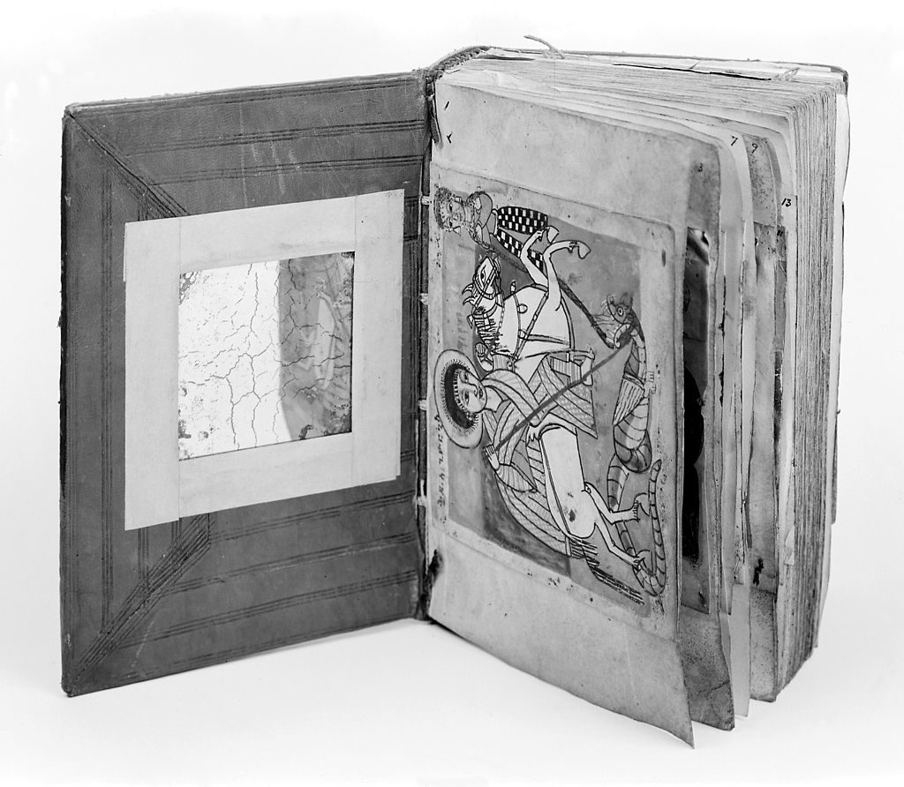

Working with Transkribus
From MSS to texts
Introduction

→
 →
→
 →
→

This presentation describes the workflow used to transcribe Manuscripts from the Ethiopian and Eritrean Tradition. The focus is here on obtaining a TEI file with an initial text transcription which profits from a wealth of information which is machine generated but can still be used in a context of community based contributions.
Transcription
This stage is critical to get sufficient acquaintance with a text to be able to carry out the editorial and philological work.
Require specific knowledge and expertise and are often a long and time consuming task
Why Technology?

To optimize time utilization

To mange vast amount of data
Tools for Ethiopian and Eritran Manuscript Transcritpion
Beta maṣāḥǝft research environment for the Manuscripts from Ethiopia and Eritrea
The project Beta maṣāḥǝft: Manuscripts of Ethiopia and Eritrea (Schriftkultur des christlichen Äthiopiens und Eritreas: eine multimediale Forschungsumgebung) is a long-term project funded within the framework of the Academiesʼ Programme (coordinated by the Union of the German Academies of Sciences and Humanities) under survey of the Akademie der Wissenschaften in Hamburg. The project is hosted by the Hiob Ludolf Centre for Ethiopian Studies at the Universität Hamburg and is lead by Prof. Alessandro Bausi.
In order to obtain a TEI file with an initial text transcription from manuscripts, to be published alongside the catalogue description of the manuscript itself, we have investigated a series of options, among which we have chosen to use the Transkribus sofware by READ Coop.
Transkribus
In order to obtain a TEI file with an initial text transcription from manuscripts, to be published alongside the catalogue description of the manuscript itself, we have investigated a series of options, among which we have chosen to use the Transkribus sofware by READ Coop.